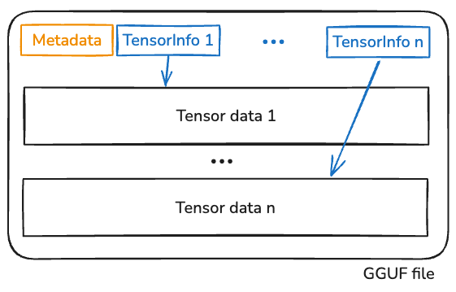
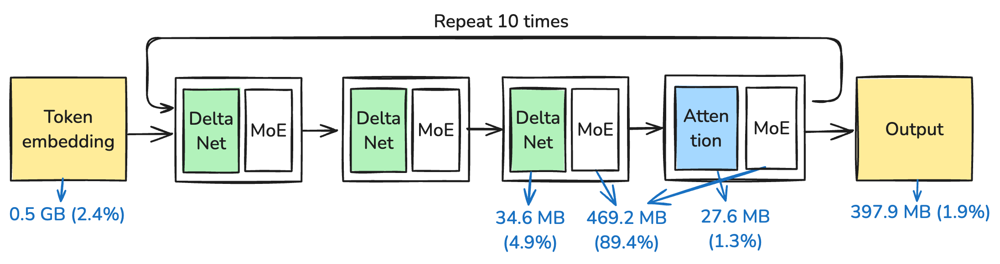
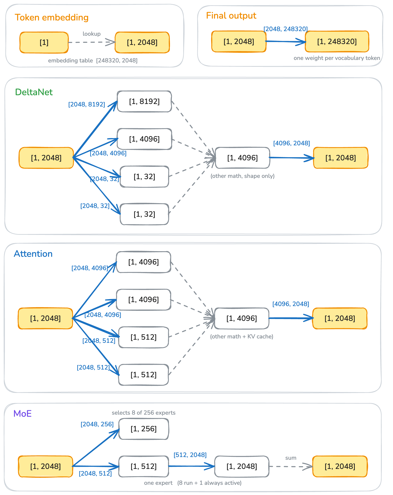
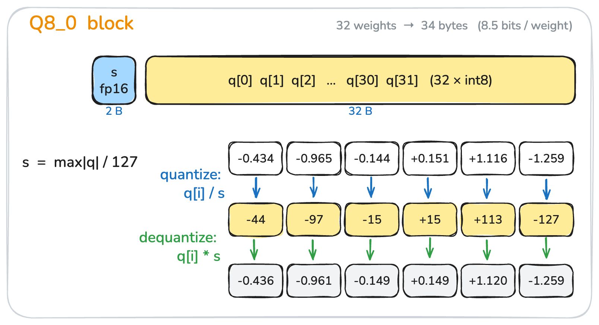
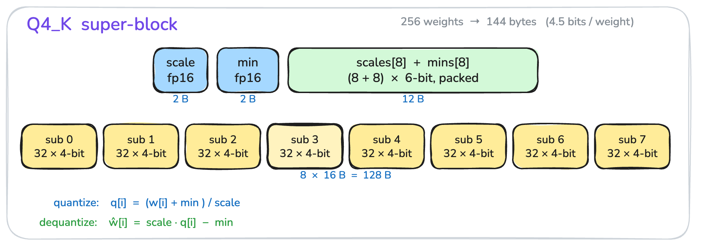
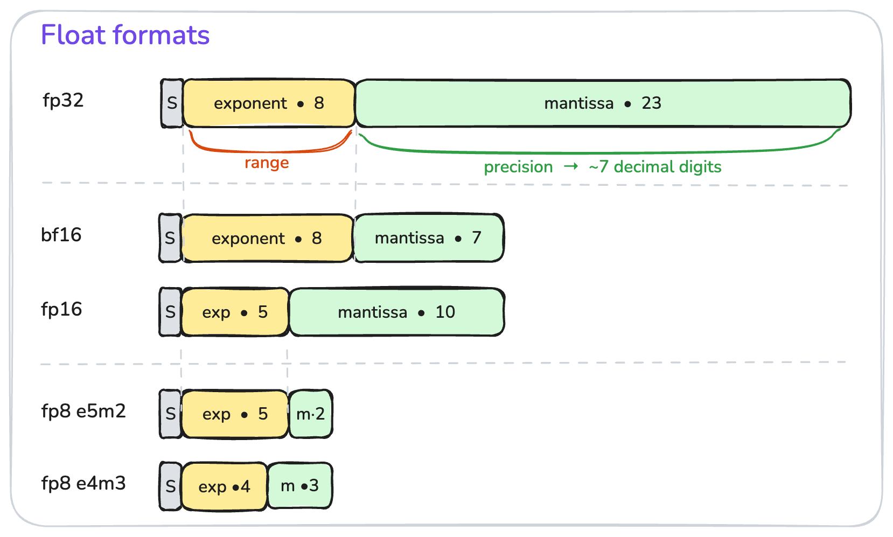
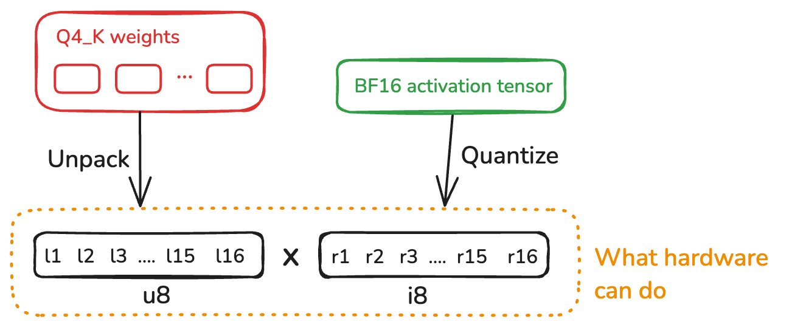
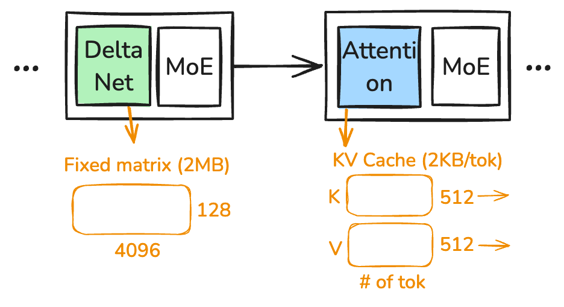

LLMs have become so important that I (probably you as well) want to understand them better, and the best way to learn is to build one.
In this blog post, I’ll share what I’ve learned about LLM inference, from the perspective of a systems programmer.
I pick the model Qwen3.6-35B-A3B-UD-Q4_K_M.gguf so that it runs on most machines but is also complex enough to count as a “modern LLM” 1. This is the only model to support here. By the end, we’ll be able to run prefill at 100 tokens/s and decode at 15 tokens/s, not so bad on a CPU-only machine.
1 The model was released in April 2026.
This blog covers most of the important parts of a local LLM inference engine:
- The LLM architecture
- Quantization
- Fast matrix multiplication
- KV cache
But does not cover:
- GPU acceleration, this is a pure CPU inference engine. I’ll probably do a GPU follow up later.
- No MTP (speculative decoding), because we are not GPU yet.
- Things that are {vendor-specific | closed-source}, e.g., CUDA, are not covered
How to read the name? Qwen3.6-35B-A3B-UD-Q4_K_M.gguf
Qwen (pronounced /kwɛn/, like “when” with a “kw”) is the model family name; it comes from Alibaba, a not so popular Chinese company (in tech world).
3.6 is the version number; previous versions were 3.5 and 3, so the family has been around for a while.
35B is the model size. 35 Billion is the number of parameters; if each parameter were 8 bits (fp8 or int8), the model would be about 35 GB.
A3B means the model activates 3 Billion parameters to generate a token. It also implies the model is an MoE (Mixture of Experts) model — unlike dense models where all parameters are activated for every token.
UD-Q4_K_M means the model is quantized to 4 bits (Q4), and K_M is the quantization scheme (there are many ways to quantize a model). UD stands for Unsloth Dynamic quantization; Unsloth is a company that produces these quantized variants.
gguf is the model file format. Unlike safetensors, gguf is a self-contained format: a single file holds everything you need to run the model. In practice, it’s just metadata plus the model weights.
What’s inside the file?
The file format is pretty boring (as intended): some metadata describing the model, followed by pairs of tensor info and tensor data, as shown in Figure 1.

The tensor info is stored at the beginning of the file, and points to the actual tensor data through the offset and len fields:
struct TensorInfo {
name: String, // e.g., `blk.3.attn_norm_weight`
shape: Vec<u64>,
dtype: u32,
offset: u64,
len: u64,
}Note that dtype is a per-tensor field, which means two tensors in the same file may use different data types (i.e., different quantization schemes). This lets us store important tensors (e.g., the embedding weights) with more bits for higher precision, while quantizing the rest more aggressively. As you might guess, per-tensor quantization is a fine art.
A closer look at the quantization schemes shows that the model has 6 different types of tensors, more than half of the bytes are quantized to Q4_K:
BF16 2 tensors 1.00 MB
F32 368 tensors 99.78 MB
Q4_K 82 tensors 11808.00 MB
Q5_K 38 tensors 6688.00 MB
Q6_K 4 tensors 1027.85 MB
Q8_0 259 tensors 1978.38 MB
------ ---- --------- ----------
total 753 tensors 21603.01 MBThe metadata also encodes the model architecture: the number of layers, the model family, and so on.
The model architecture
The model belongs to the Qwen3-Next family; for background on the architecture lineage, see Sebastian Raschka’s “Big LLM Architecture Comparison”.
Figure 2 is a simplified view of the architecture and its weight distribution. For every input token, the model first converts it into an embedding vector (with dimension 2048 for this model), then runs it through several layers of computation to produce the final output.
Qwen3.6 is not a typical transformer: it mixes the so-called DeltaNet layers with conventional Attention layers at a 3:1 ratio. We will get to the details later; the high-level intuition is that attention’s per-token state (the KV cache) grows linearly with sequence length and its compute is quadratic, while DeltaNet’s state is fixed-size — this helps the model scale to longer context.
All Qwen3.6 family models share this architecture; larger members of the family scale by adding more layers and using a wider hidden dimension (e.g., the Qwen3-Next-80B variant has 48 layers and a 2048 hidden dim).2
2 Qwen3.6-35B-A3B has 40 layers organized as 10 repetitions of (3 DeltaNet + 1 Attention) blocks, so 30 DeltaNet layers and 10 Attention layers. See the apxml spec page.

Table below shows the more detailed weights distribution:
Group Params Stored Share
-----------------------------------------------------------------
Token embedding 508.56 M 515.31 MiB 2.44%
DeltaNet layers 1.01 B 1.01 GiB 4.92%
Attention layers 272.66 M 276.35 MiB 1.31%
MoE blocks 32.36 B 18.43 GiB 89.44%
Final output 508.56 M 397.86 MiB 1.89%
-----------------------------------------------------------------
Reported total 34.66 B 20.60 GiB 100.00%MoE blocks dominate: they account for 89.4% of model size, and each MoE block is roughly 469 MB. However, each MoE block only activates 1/32 of its parameters (8 of 256 experts per token), while the other components fire for every token. So each token activates approximately 0.508B + 1.01B + 273M + 32.36B / 32 + 0.508B ≈ 3.3B parameters, which rounds to the “3B” in “A3B”.3
3 The official “3B active” figure is computed slightly differently — see the Qwen3.6 model card. The ballpark is the same.
There are two stages of LLM inference: prefill and decode. Prefill processes the input prompt (potentially thousands of tokens) in a single forward pass and populates the per-layer state (KV cache, DeltaNet state). It is usually compute-bound. Decode generates tokens one at a time, and on each step the full weight matrix must be streamed through the FPUs again, so it is usually memory-bound. We’ll come back to this distinction later.
Token <–> String
A token is an LLM-specific representation of a string. It isn’t fundamentally different from other representations like ASCII or Unicode, where 42 means * (in ASCII) and U+1F3D4 means 🏔 (in Unicode).
The first thing to look at is the vocabulary table, stored in the tokenizer.ggml.tokens metadata field as a list of strings. The first 8 tokens of this model are: [!, \, #, $, %, &, ', (]. So token id 0 refers to !, id 7 refers to (, and so on.
Note that different models may have different vocabulary tables. A smaller vocabulary means more tokens are needed to represent the same string. Modern LLMs tend to have larger vocabularies — this model has 151,936 vocabulary tokens, which exceeds u16::MAX (65,535), so the token index must be u32.4
4 Anthropic changed their tokenizer in Opus 4.7, which produces 1.46× more tokens on the same text input — a hidden ~46% price hike at the same per-token rate.
From token to string
Token-to-string is easy: look up each token in the vocabulary and concatenate the strings.
The one caveat is streaming output: a single token may represent only a partial UTF-8 sequence, so the decoder needs to buffer bytes until a complete codepoint can be emitted. This is especially common with non-ASCII scripts and emoji.
From string to token
String-to-token is more involved, but conceptually similar to how dictionary-based compression works. We start with the property that every byte in the input string has a single-token representation — by design — which guarantees that any input is representable.
Then we apply byte-pair encoding (BPE) merge rules; the goal is to greedily merge adjacent tokens into the longest sequences the vocabulary supports, which reduces the total token count.
Actually there are more details to consider
- Pre-tokenization. A pre-tokenizer first splits the input into smaller chunks (along whitespace, punctuation, digits, etc.) so that downstream BPE merges don’t span boundaries we’d prefer to keep separate — e.g., a single token that straddles two Chinese characters.
- BPE merge. We then run a BPE merge over adjacent tokens. It is comparatively expensive but reduces the total token count substantially.
- Chat templates. Special tokens like
<|im_start|>,<|im_end|>, etc., delimit roles in a conversation; the model uses these to recognize turn structure.
Roughly speaking, an LLM is a function:
fn inference(input: Vec<u32>) -> u32The life of a tensor
Once we have the input tokens, the next step is to predict the next token.
There are lots of algorithms and math involved, but honestly, you don’t need to know most of it — you can think of inference as a chain of matrix multiplications. Knowing what RoPE, QKV, softmax, RMSNorm, etc. do is cool to talk about, but from an system programmer’s perspective it doesn’t really matter.
What matters is the shape of the tensors, because that determines the compute and memory requirements.

Figure 3 shows the life of a tensor; blue arrows are matrix multiplications, grey arrows are auxiliary math like normalization and softmax.
The first thing to care about is the embedding table, a 2D tensor of shape [vocabulary_size, embedding_dim], in this case [151936, 2048]. Converting a token to an embedding is a simple lookup: slice out one row to get a [1, 2048] tensor. This [1, 2048], usually called the activation tensor, is both the input and the output of every subsequent layer.
The final output projection converts the [1, 2048] activation into a [1, 151936] tensor, assigning a logit to each token in the vocabulary. We can pick the token with the highest logit as the next token, or use a sampling algorithm like top-k / top-p / temperature sampling to get variation.
The rest of the blocks — attention, DeltaNet, and the MoE blocks — all take [1, 2048] as input and produce [1, 2048] as output; internally each is a chain of matrix multiplications with some supplementary math like normalization and softmax.
The above describes a single token (the decode case); prefill is the same except the activation is [n, 2048] rather than [1, 2048]. The math is unchanged.
Reading the first tensor
In an ideal world, every tensor would be a simple f32 tensor, and matrix multiplication would be simple and well-optimized.
But f32 is too expensive: for our 35B model, going all-f32 would require 35B × 4 = 140 GB of memory. On top of that, f32 is overkill for practical LLM inference — we can drop to 8 bits with almost no loss of accuracy, and even 4 bits retains most of the information.5
5 Q4_K_M typically retains ~92% of the original FP16 model’s quality at roughly 25% of the bytes; Q8_0 is “essentially lossless” with perplexity drift around 0.01.
Using fewer bits per weight not only reduces the memory footprint but often makes compute faster, especially for GEMV, where memory bandwidth is the bottleneck — less data to load means a shorter critical path.
The flip side is that the matmul itself gets more complicated, especially since the file contains a mix of quantization schemes. We’ll come back to that.
As listed earlier, the model has six tensor types; here we only discuss two representative ones: Q8_0 and Q4_K.
Q8_0 block
Figure 4 shows a Q8_0 block. It’s the simplest quantization scheme: take an fp32 value, divide by a scale, and round to the nearest integer. Dequantization is the reverse — multiply the quantized value by the scale. The scale is chosen as max(|w|) / 127, so the quantized values land in [-127, 127]. Each block holds 32 weights plus a single fp16 scale, packed into 2 + 32 = 34 bytes (source: llama.cpp block_q8_0 definition).

Q8_0 block: 32 weights stored in 34 bytes (8.5 bits / weight).
Q4_K block
Q4_0 is similar to Q8_0, except it uses 4 bits per weight; in fact Q4_0 is also widely used. But it has two problems.
The first problem is that it assumes weights are symmetrically distributed around 0, which is not always the case. If, for example, all weights in a block are positive and we still use a signed int4 representation, we waste half of the representable range. To fix this, we shift the weights by their minimum, so that the shifted weights are all non-negative, and use an unsigned integer to represent them.
But now we need to store two fp16 values per block — the scale and the min. If only 32 weights share these two parameters, the overhead is large; if many more weights share them, a single outlier can dominate the scale and produce unbalanced quantization.
Figure 5 shows the key idea behind Q4_K: each group of 32 weights (a sub-block) has its own scale and min, and a 256-weight super-block re-quantizes those sub-block scales and mins to 6 bits each (packed into 12 bytes for 8 pairs), with the super-block storing a pair of fp16 values (d and dmin) to decode them. See the llama.cpp tensor encoding wiki for the exact layout.

Q4_K super-block: 256 weights stored in 144 bytes (4.5 bits / weight).
fp32 vs fp16 vs bf16 vs fp8?
Now is a good time to talk about fp166 and bf16.
6 fp16 is sometimes called f16.
As Figure 6 shows, they’re really simple: every floating-point number has three parts — sign, exponent, and mantissa. The exponent controls the range of representable values; the mantissa controls the precision.
bf16 and fp16 are two different ways to cut fp32 in half: bf16 keeps the 8-bit exponent (so the same range as fp32, but loses mantissa precision), while fp16 shrinks the exponent to 5 bits (smaller range, but more mantissa bits). Similarly, fp8 E5M2 keeps a 5-bit exponent, while fp8 E4M3 trades one exponent bit for more precision.

Use fp16 when you need more precision, as in the per-super-block scale of our Q4_K; use bf16 when you want to match fp32’s range and not worry about overflow — that’s why it’s popular for LLM training.
There’s something special about bf16: converting between bf16 and fp32 is almost trivial. bf16 → fp32 is a 16-bit left shift (zero-pad the low mantissa bits); fp32 → bf16 is a 16-bit right shift (truncate or round-to-nearest the low 16 bits).
How to structure the code?
As we’ve discussed, we don’t care about the exact math here, but we do care about the shape of the matrices—and it’s better to encode what we care about directly into the type system.
So instead of writing code like this, which is very much like Python and makes me nervous: it’s unclear about the shape of the tensors, and whether their quantization scheme and shape matches.
fn matmul(x: Tensor, w: Tensor) -> TensorThis is the interface I liked:
fn matmul<const IN: usize, const OUT: usize, N>(
x: &Act<Self, N, IN>,
w: &QWeight<Self, IN, OUT>,
) -> Act<Self, N, OUT>Each tensor is strongly typed with its shape and quantization scheme. If the shapes of two tensors don’t match, the code won’t even compile!
We can similarly encode shapes into our layer and model definitions:
pub struct GatedAttentionBlock<B: Backend> {
k_weight: QWeight<B, D_MODEL, KV_DIM>,
v_weight: QWeight<B, D_MODEL, KV_DIM>,
...
q_norm_gamma: Dense<B, 1, HEAD_DIM>,
k_norm_gamma: Dense<B, 1, HEAD_DIM>,
}The rest of the code follows the same philosophy: encode the constraints we care about directly into the type system!
Matrix multiplication
Now comes the elephant in the room: matrix multiplication.
Before judging any approach, let’s first build a mental model of what performance we should expect. For two matrices [a, b] and [b, c], it’s not too hard to see that:
Optimal compute: 2 * a * b * c = 2abc FLOPs
Optimal memory: ab + bc + acWe have to read both inputs once, write the output once, and do b multiply-adds for each of the a*c output entries. Anything more is overhead.
Note: A matrix multiply with [1, 2048] (the decode case) is usually called “GEMV” (General Matrix-Vector Multiplication), while a multiply with [n, 2048] (the prefill case) is “GEMM” (General Matrix-Matrix Multiplication). The math is identical but the implementation is completely different, because shape matters. GEMV is memory-bound: each weight is loaded from RAM, multiplied with one activation, and never reused — the weight matrix is streamed row by row. GEMM is often compute-bound: each weight is now reused across n activation columns. Once n is large enough that we can keep a weight tile in registers / L1 and sweep it across multiple output columns, arithmetic intensity rises above the machine’s compute-to-bandwidth ratio, and the FPU becomes the bottleneck.
Naive dequant-then-multiply is bad
The simplest approach is to dequantize both sides to fp32, run the good old GEMM, and quantize the result back. This works, but it throws away most of what we got from quantization. Every 0.5-byte Q4_K weight expands to 4 bytes of fp32 traffic before we even start multiplying — an 8× blowup of the memory we worked so hard to compress. On top of that, we pay ~2 * (ab + bc) extra FLOPs for the dequantization itself.
For GEMV this is catastrophic, because GEMV is memory-bound. If we expand weights to fp32, we’re back to where we started before quantizing anything. So we want to multiply directly on the quantized weights, without ever materializing fp32 in between.
Picking the activation format
The weights are pre-quantized in the file, but the activation tensor ([1, 2048] for decode, [n, 2048] for prefill) is computed at runtime, so we get to choose its format.
bf16 is the natural carrier between layers: same range as fp32, half the size, and softmax/norm are happy with it. But it’s not the right format inside the matmul itself, because no CPU has a native bf16 × q4 multiplier.
The instruction we do have, on both AVX-VNNI (VPDPBUSD) and ARM (USDOT, available via i8mm), is the integer dot product: u8 × i8 → i32, accumulating 4 byte-products into each 32-bit lane. On AVX-512 VNNI a single VPDPBUSD produces 16 i32 lanes per 512-bit register; on AVX-VNNI (256-bit) it produces 8 lanes; on Neon with USDOT it produces 4 lanes per 128-bit register. So inside the matmul we want both operands as 8-bit integers:
Q4_Kweights are 4-bit unsigned; unpacking each nibble into au8is essentially free.- Activations need to be
i8, so we quantize bf16 toQ8_K. Its 256-weight super-block lines up exactly withQ4_K, andQ8_Kalso caches per-sub-block sums of the activation, which — as we’ll see in a moment — is exactly what we need.
The smart
We can now narrow the problem down to this: we have a 32-weight sub-block of Q4_K and the matching sub-block of Q8_K. How do we efficiently dot-product them?
For Q4_K, each dequantized weight is \(w_l = q_l \cdot s_l - m_l\), where \(q_l\) is u8 (range 0–15) and \(s_l, m_l\) are fp32 sub-block scale and min reconstructed from the 6-bit packed values and the super-block’s fp16 d and dmin. For Q8_K each activation is \(w_r = q_r \cdot s_r\) — Q8_K is symmetric, so there’s no min term.
The dot product over the sub-block expands as:
\[ \sum_{i=0}^{31} w_l[i] \cdot w_r[i] \;=\; s_l \cdot s_r \cdot \underbrace{\sum_i q_l[i] \cdot q_r[i]}_{\text{u8 × i8 integer dot}} \;-\; m_l \cdot s_r \cdot \underbrace{\sum_i q_r[i]}_{\text{i8 sum, precomputed by Q8\_K}} \]
Two integer reductions, then two multiply-adds in fp32. The expensive part — the 32-term dot product — never leaves integer land, which is exactly what the SIMD instruction is good at. The second term, \(\sum q_r\), is already cached inside the Q8_K block (the bsums field) when we quantized the activation, so it’s just a load, not a runtime reduction. This is the whole reason Q8_K exists.
Putting it together
You don’t need to understand every detail here. The key idea is that there’s a storage reality — weights are quantized to save memory — and there’s a compute reality — hardware can only do certain operations on certain shapes.
The goal of everything above is a delicate balance: nudge both sides a bit, pick a good instruction and move the formats a little bit.

The state: KV cache and DeltaNet state
As a systems programmer, I don’t love the name “KV cache” — it sounds like a key-value store (e.g., Redis), but it’s neither a key nor a value in that sense. Here, K and V are the names of two matrices in the attention layer.
Recall that LLM inference is a function:
fn inference(input: Vec<u32>) -> u32which is stateless — so where does the state come from? Well, because we’re not generating a single token but a sequence of them, the real loop looks more like this:
loop {
let token = inference(&input);
input.push(token);
if token == EOS {
break;
}
}Each inference appends one token to the input, so the next call processes a longer input. The observation is that most of the per-token state from prior inferences can be reused — recomputing it on every step is wasted work. KV cache is the most well-known such state; DeltaNet state is specific to the Qwen3-Next family.
Figure 8 shows the state of the Qwen model: KV cache and DeltaNet state. Note that both states are per-layer, not per model. For each attention layer, the KV cache stores a K matrix of shape [n, 512] and a V matrix of shape [n, 512], where n is the number of tokens seen so far (Qwen3.6-35B-A3B uses 2 KV heads × 256 head dim = 512). The KV cache grows linearly with the number of tokens, so at bf16 each new token adds 2 × 512 × 2 bytes = 2 KB per attention layer. With 10 attention layers (out of 40 total layers), each token costs 20 KB of KV-cache memory.
The DeltaNet state is a fixed-shape matrix [4096, 128] of fp32 values, so 4096 × 128 × 4 = 2 MB per layer regardless of context length. That’s the whole point of DeltaNet: its state has a fixed size, so memory and compute stay bounded even on long-context workloads.

Note that each token adds exactly one row to the KV cache, and that row depends only on the preceding tokens. This means “java” and “javascript” share the same first four KV-cache rows (assuming each character is a token), which is very convenient: we can save the KV cache for “javascript” and slice off the first four rows to get the KV cache for “java”. This is what powers prefix caching in production serving systems.
Performance
Fuse kernels
Kernel fusion combines two operations into one, either to reduce memory traffic or to use a better instruction. For example, multiply-then-add can be fused into a single FMA (fused multiply-add) instruction, which both halves the instruction count and avoids rounding the intermediate product.
SIMD instructions
In the matrix multiplication section, we already used SIMD instructions to vectorize the inner loop.
Broadly, there are two ways to leverage SIMD:
- Auto-vectorization by the compiler. LLVM does a pretty good job here.
- Explicit SIMD intrinsics. Auto-vectorization is a black box; it can fail to fire for two reasons: (1) the compiler is conservative and may not pick the instruction we want, or (2) we wrote the loop in a pattern the compiler doesn’t recognize. For performance-critical code I tend to prefer explicit intrinsics, because you want to know exactly what is being emitted.
An explicit SIMD kernel looks like the following. It looks intimidating at first, but it’s really just a sequence of load / multiply / add / reduce instructions, and you don’t need to hand-write it — ask Codex or Claude to draft it for you and then verify.
for n in 0..n_rows {
let x = &act[base + n];
let mut av = _mm512_setzero_si512();
for p in 0..4 {
let xv = _mm512_loadu_si512(x.qs.as_ptr().add(p * 64) as *const __m512i);
let dp = _mm512_dpbusd_epi32(_mm512_setzero_si512(), w[p], xv);
av = _mm512_add_epi32(av, _mm512_mullo_epi32(dp, s16[p]));
}
let acc_scaled = _mm512_reduce_add_epi32(av);
let pairs =
_mm256_madd_epi16(_mm256_loadu_si256(x.bsums.as_ptr() as *const __m256i), ones);
let acc_min = hsum_i32_256(_mm256_mullo_epi32(pairs, mnv));
acc[n] += x.d * (d * acc_scaled as f32 - dmin * acc_min as f32);
}Multi-threading
Multi-threading here is not very different from other systems; the first question is how to partition the work. The simplest scheme is to partition by user: each request gets a thread that runs the entire inference end-to-end.
A more interesting question is what the lowest single-user latency (time-to-first-token) we can achieve looks like. To optimize that, we need to parallelize within a single inference.
The cost model: thread creation is expensive (microseconds, sometimes more), so we use a thread pool to avoid creating and destroying threads on each call. Contention on shared memory hurts, so we want to partition work so each thread owns its own working set.
How did we do?
My machine has roughly 55 GB/s of usable memory bandwidth, which is the ceiling we should aim for in memory-bound kernels.
The table below shows end-to-end performance and per-kernel performance. The two biggest kernels are qmatmul and moe_routed_experts, and their effective bandwidth is already close to the hardware limit — we’ve done a good job.
bench: model/Qwen3.6-MTP-35B-A3B-UD-Q4_K_M.gguf
cpu:
load: 3.46s
prefill: 256 tok in 2.176s — 117.7 tok/s
decode: 64 tok in 4.234s — 15.1 tok/s (66.1 ms/tok)
------------------------------------------------------------------------------
kernel count total bytes eff bw
------------------------------------------------------------------------------
qmatmul 9024 2282.582ms 113837932544 49.87 GB/s
moe_routed_experts 2560 815.111ms 39158022144 48.04 GB/s
moe_shared_expert 2560 309.055ms 8577351680 27.75 GB/s
attention 640 272.661ms 3040870400 11.15 GB/s
delta_rule_scan 1920 172.020ms 24238080000 140.90 GB/s
moe_router 5120 168.570ms 5413283840 32.11 GB/s
causal_conv1d_silu 1920 82.260ms 660602880 8.03 GB/s
gdn_gates 1920 65.658ms 755466240 11.51 GB/s
add_rmsnorm 5120 21.565ms 104857600 4.86 GB/s
qk_norm_rope 1280 5.234ms 17694720 3.38 GB/s
embed_rmsnorm 64 0.297ms 663552 2.23 GB/s
append_kv 640 0.216ms 2621440 12.11 GB/s
slice_last_row 64 0.021ms 524288 25.26 GB/sSource code
Honestly, no one is going to read and reuse this source code. Just send Codex (or Claude) this blog post and ask it to write an inference engine for you.
The point of this post is to help you — as a human — understand the layer beneath the LLM inference engine, so you’re a little less afraid of the code Codex generates for you.